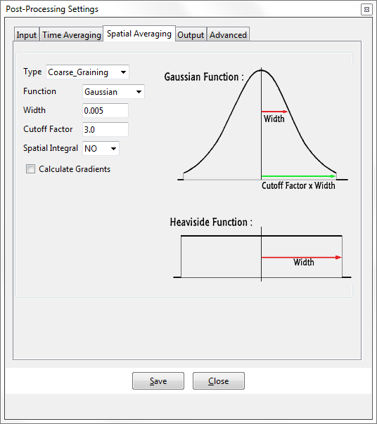

Spatial Averaging
This tab is used for the definition of the spatial averaging process. Users can chose between Binning (cell-based average values) or Coarse Graining (point-based weighted-average values). In the case of Coarse Graining, users can activate the calculation of gradients and spatial integrals.

The image above shows the appearance of the Spatial Averaging tab as seen when it is first navigated to. However, its layout will change (with different fields appearing and vanishing), as different options are selected.
Type : [Coarse_Graining / Binning] Users can select
BinningorCoarse_Grainingwhen deciding which type of spatial averaging they want. Binning will perform a simple average over those particles found to be inside an element of the coarse graining mesh. Coarse graining will apply a weighted-average over those particles found to be within a given radius of a vertex of the coarse graining mesh.- All of the rest of this section is devoted to
Coarse_Graining. If the user selectsBinningas their spatial averaging type, there are no further options.
- All of the rest of this section is devoted to
Function : [Gaussian / Heaviside] The spatial averaging function can be either
Heaviside(where a particles' contribution will be equally-weighted, no matter where it lies in the region being averaged over) orGaussian(where a particles' contribution varies according to the Gaussian distribution of the givenWidth).- For most of the cases, the use of
Coarse GrainingwithGaussianis recommended.Binning, andCoarse GrainingwithHeavisideare only for special cases, due to their limited capabilities.
- For most of the cases, the use of
Width : For
Gaussianfunction, this is the standard deviation of the function. ForHeaviside, this determines the size of the filter footprint, as shown in the diagram, above.- All of the rest of this section is devoted to use of a
GaussianFunction. If the user selectsHeavisideas their spatial averaging function, there are no further options.
- All of the rest of this section is devoted to use of a
Cutoff Factor : The
Cutoff Factoris used in combination with theWidthto ignore particles whose contribution will be very small. Since the Gaussian function only becomes zero at infinity, all particles would contribute to the spatial average, most giving the tiniest of contributions, without the cut-off approach shown in the diagram, above.- The values of
WidthandCutoff Factorare problem dependent, but for quasi-static problems or low speed flows aWidthof 2.5 to 3.0 times the average particle radius can be considered a safe value. For high speed flows and high sampling frequencies, this value can be as low as half the average radius. ACutoff Factorof 3.0 can be considered safe. In the case of high speed flows or sampling frequencies, this value can decrease to obtain a better resolution close to the boundaries.
- The values of
Spatial integral. [NO / 1D / 2D] These (probably) correspond to a 3D, 2D and 1D coarse graining mesh, respectively.
NO: If the user wants to perform spatial averaging over a ball around each vertex of a 3D coarse-graining mesh (for example, a mesh of tetrahedra) then (gradients aside) the parameters covered thus far in this section are sufficient to completely define the spatial averaging specifics.1D: If the user wants to perform spatial averaging over a circle around each vertex of a 2D coarse-graining mesh (a plane, slicing through particles) where each particle's contribution is projected onto the plane, and its distance from the plane plays no part in the final result, then the1Doption is the one to chose. The Integration direction parameter [X / Y / Z] is used to define direction in which this projection takes place. For example, a coarse-graining mesh which lies in the "X=konst" plane would use theXintegration direction.
Such averaging is not limited to the use of such a planar coarse-graining mesh; one could chose1Dwith a volumetric mesh and the projection would still take place at every vertex, but this would probably lead to repetition of your results and they would only vary across the chosen integration direction, not along it.2D: If the user wants to perform integration along a line through the data, where each particle's contribution is projected onto that line and only their distance along that line determines how they are filtered (not how far they are from it), then the2Doption is the one to chose. The Integration plane parameter [XY / YZ / XZ] specifies the components which are ignored, when such a projection takes place. For example, a coarse-graining mesh consisting of a line of points parallel to the Z axis would useXYas the integration plane parameter.
As we the case with1D, such averaging is not limited to a particular type of coarse-graining mesh; one could chose2Dwith a volumetric or planar mesh and the projection would still take place at every vertex, but this would probably lead to even more repetition of your results and they would not vary across the chosen integration plane, only with distance away from it.
Calculate Gradients : [on/off] Activate the calculation of spatial gradients during the averaging process. The gradients will be chosen in the results menu for the standard results: Density, Solid fraction, Momentum, and Velocity.